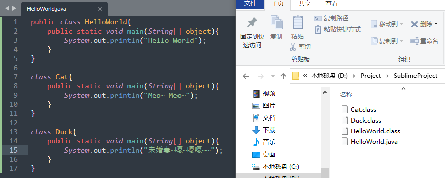
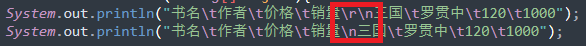
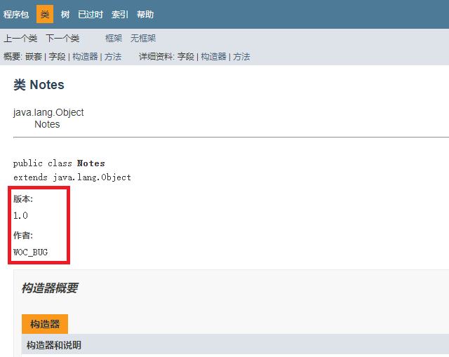
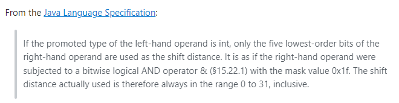
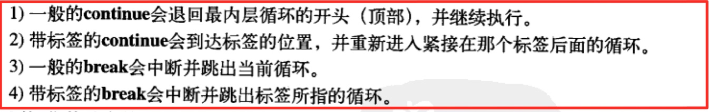
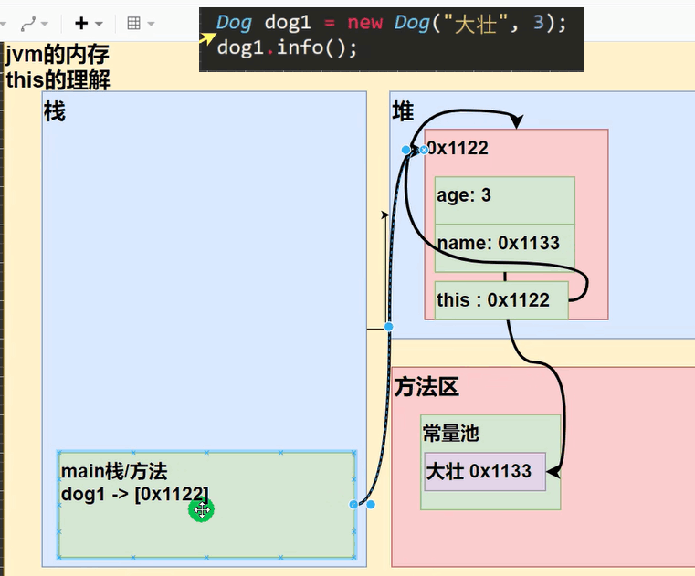
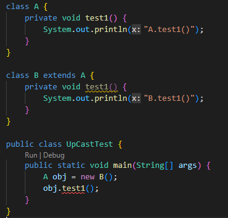
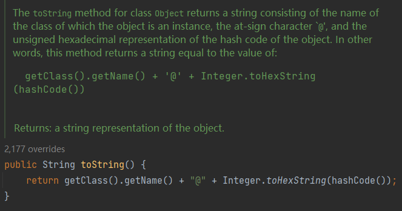

Java基础
一、Java开发细节¶
（一）注意事项¶
- 一个源文件中最多只能有一个
public类，且该类名称必须和文件一致。 - 一个源文件中可以有多个非
public的类，这些java类中均可以写main方法，用javac编译后会生成多个class文件，可以分别运行。

（二）学习方法¶
1. 需要学习的情况¶
- 工作需要
- 跳槽
- 平时学新技术
2. 要点¶
- 用传统技术考虑是否能解决工作需要，若解决不了或不完美，再找新技术对比并解决。
- 做好调研，要知道新技术能够解决什么问题，改进在哪，能带来什么优势？相应的缺点又是什么？
- 学习新技术时，不要去太钻研细节，要先把基本原理和语法弄懂。
- 用学到的基本原理实现个快速入门的小项目（如：增删改查），已经可以实现基本的工作需求了。
- 最后，再研究技术的细节、规范、如何优化等（这部分是永无止境的）
（三）Intellij Idea¶
1. 快捷键¶
file -> setting -> editor -> keymap可查看/修改
| 快捷键 | 功能 |
|---|---|
| Ctrl+Alt+L | 格式化 |
| Ctrl+Y | 删除当前行 |
| Alt+Enter | 导入依赖包 |
| Ctrl+D | 复制当前行 |
| Ctrl+F | 查找 |
| Ctrl+R | 替换 |
| Alt+Insert | 插入构造器等 |
| Ctrl+H | 查看类结构 |
| Ctrl+B或鼠标左键 | 定位类/方法/变量的定义处 |
| F7 | 跳入（进入方法） |
| F8 | 跳过（执行语句，不进入方法） |
| shift+F8 | 跳出（跳出方法） |
| F9 | 执行到下一个断点 |
| 选中代码段，Ctrl+Alt+T | 添加if-else、try-catch、while等Surround With块 |
| Ctrl+J | 显示所有快捷键 |
| Ctrl+G | 光标快速跳跃到指定行 |
2. 模板¶
file -> setting -> editor -> Live templates可查看/修改
| 类、变量 | 含义 |
|---|---|
| main | public static void main(String[] args) |
| geti | public static |
| psf[i/s] | public static final [int/String] |
| prsf | private static final |
| lst | args[args.length - 1] |
| new Object().var | 自动创建变量名 |
| 输出 | 含义 |
|---|---|
| sout | System.out.println(); |
| soutv | System.out.println("args = " + args); |
| souf | System.out.printf(""); |
| serr | System.err.println(); |
| 循环 | 含义 |
|---|---|
| fori | for(int i=0;i<;i++) |
| 大写i | 增强版for循环：for(Object obj: ) |
| iter | for (String arg : args) |
| itar | for (int i = 0; i < args.length; i++) |
| ritar | for (int i = args.length - 1; i >= 0; i--) { |
| itli | for (int i = 0; i < list.size(); i++) |
| itco | for (Iterator iterator = collection.iterator(); iterator.hasNext(); ) |
| 其他 | 含义 |
|---|---|
| ifn | if (args == null) |
| inn | if (args != null) |
| mn | = Math.min(, ); |
| mx | = Math.max(, ); |
| toar | .toArray(new Object[0]) |
| thr | throw new |
| tryc | try...catch |
| trycf | try...catch...finally |
| RL | .readLock().lock(); |
| WL | .writeLock.lock(); |
二、Java基础¶
（一）转义字符¶
| 字符 | 含义 |
|---|---|
\t |
制表符，实现tab对齐功能 |
\n |
换行符 |
\r |
回车符，回到行首（之后再输入内容会直接替换本行原有字符） |
\\ |
\ |
\" |
" |
\' |
' |
\r和\r\n效果一致，都是换行 
（二）注释¶
- 单行注释：
1 | |
- 多行注释：
1 2 3 4 | |
- 文档注释：
1 2 3 4 | |
注释内容可以用javadoc工具生成说明文档：
1 | |
例：


（三）文档注释常用标签¶
| 标签 | 描述 |
|---|---|
@author |
标识一个类的作者 |
@deprecated |
指名一个过期的类或成员 |
{@docRoot} |
指明当前文档根目录的路径 |
@exception |
标志一个类抛出的异常 |
{@inheritDoc} |
从直接父类继承的注释 |
{@link} |
插入一个到另一个主题的链接 |
{@linkplain} |
插入一个到另一个主题的链接，但是该链接显示纯文本字体 |
@param |
说明一个方法的参数 |
@return |
说明返回值类型 |
@see |
指定一个到另一个主题的链接 |
@serial |
说明一个序列化属性 |
@serialData |
说明通过writeObject()和 writeExternal()方法写的数据 |
@serialField |
说明一个ObjectStreamField组件 |
@since |
标记当引入一个特定的变化时 |
@throws |
和@exception标签一样. |
{@value} |
显示常量的值，该常量必须是static属性。 |
@version |
指定类的版本 |
（四）DOS命令（Windows）¶
| 命令 | 含义 |
|---|---|
dir |
目录 |
tree |
目录树 |
cd |
切换目录 |
cd /D c: |
从D盘切换至C盘根目录 |
d:/abc/text.txt 或 d:\\abc\\text.txt |
绝对路径 |
../../text.txt或 ..\\..\\text.txt |
相对路径 |
cls |
清屏(苍老师) |
exit |
退出 |
md |
创建目录 |
rm |
删除目录 |
copy |
拷贝文件 |
echo |
向文件输入内容 |
type |
创建文件 |
move |
剪切 |
（五）JDK、JRE、JVM的关系¶
JDK = JRE + java开发工具
JRE = JVM+ java核心类库
（六）Java编写过程¶
- 编写
Java源码 javac编译成.class字节码文件java运行，即将.class文件加载到jvm运行
三、Java变量¶
（一）变量¶
| 基本数据类型 | 字节 | 细节 | 范围 | 默认值 |
|---|---|---|---|---|
| byte | 1 | -2^7 ~ 2^7-1 | (byte)0 | |
| short | 2 | -2^{15} ~ 2^{15}-1 | (short)0 | |
| int | 4 | -2^{31} ~ 2^{31}-1 | 0 | |
| long | 8 | 数据后面建议加l或L |
-2^{63} ~ 2^{63}-1 | 0L |
| float | 4（符号位+指数位+位数位） | 数据后面必须加f或F |
-3.403E38 ~ 3.403E38 | 0.0f |
| double | 8（符号位+指数位+位数位） | 注意比较/运算的精度问题 | -1.798E308 ~ 1.798E308 | 0.0d |
| char | 2（Unicode编码） | -2^{15} ~ 2^{15}-1 | '\u0000'即null | |
| boolean | 1 或 4 （有待考证） | 0、1 | false |
全局变量（即属性）有默认值，而局部变量不会被自动初始化
全局变量和局部变量可以重名，访问时遵循就近原则
1 2 3 4 5 6 7 8 9 | |
| 引用数据类型 | 字节 |
|---|---|
| 类 | |
| 接口 | |
| 数组 |
+号的使用¶
- +号前后都是数值类型，做运算
- +号前后有字符类型，做拼接

字符¶


Boolean¶
Java中不能用0或非0的数字代表true或false
（二）类型转换¶
从低精度到高精度能够自动转换：
char -> int -> long-> float -> double
byte -> short -> int -> long-> float -> double
为什么long能自动转换为float?
float中有8位表示指数、23位表示尾数，范围是2^{127}（127是因为指数不能为负数）；
long的范围是2^{64}；
因此float范围远大于long。
- 多种数据类型混合运算时，首先会转换成容量最大的数据类型
1 2 3 | |
-
（
byte，short）与char不能相互转换 -
byte、short、char三者可以运算，不管它们是单独运算还是混合运算，计算过程中都会首先转为int
单独运算：
1 2 3 4 | |
混合运算：
1 2 3 4 | |
-
boolean不参与类型的自动转换 -
char类型只能保存int类型的常量值，不能保存变量值
1 2 3 4 | |
（三）基本数据类型转换习题¶
习题1¶

习题2¶

字符相加得到的是其字符码值相加的和
（四）String¶
基本数据类型转String¶

String转基本数据类型¶

（五）变量初始化顺序¶
变量之间定义的先后顺序，决定了初始化顺序
即使变量定义分散在方法之间，他们仍然在任何方法（包括构造器）之前被初始化。
四、运算符¶
（一）算术运算符¶
除法/¶
1 2 3 4 5 6 | |
取模%¶
a % b = a - a / b * b
1 2 3 4 5 | |
当a是小数时：
a % b = a - (int) a / b * b
1 2 3 4 5 | |
自增++¶
i = i++
1 2 3 4 5 6 7 | |
i = ++i
1 2 3 4 5 6 | |
（二）逻辑运算符¶
&&和&¶
a && b：若a为假，则不会执行/判断ba & b：若a为假，依旧会执行和判断b
1 2 3 4 5 6 7 8 9 | |
1 2 3 4 5 6 7 8 9 | |
||和|¶
同理
a || b：若a为真，则不会执行/判断ba | b：若a为真，依旧会执行和判断b
（三）复合运算¶
+=、++等¶
复合运算会自动强制类型转换
1 2 3 4 | |
（四）赋值运算符的结果¶
注意：赋值语句的结果并不是永真，而是要判断赋值操作后的结果值的
1 2 3 4 5 6 7 8 | |
（五）运算符优先级¶

（六）原码、反码、补码¶
- 0和正数的原码、反码、补码都是它本身
- 负数的反码 = 其原码符号位不变，其它位取反 = 其补码 - 1
- 负数的补码 = 其反码 + 1
java中的数都是有符号的- 运算时要用补码运算，看结果要用源码看
例题1，求 ~-2：
- -2原码： 10000000 00000000 00000000 00000010
- -2反码： 11111111 11111111 11111111 11111101
- -2补码： 11111111 11111111 11111111 11111110
- ~-2补码：00000000 00000000 00000000 00000001
- ~-2原码：00000000 00000000 00000000 00000001
答案： 1
例题2，求~2:
- 2原码： 00000000 00000000 00000000 00000010
- 2补码： 00000000 00000000 00000000 00000010
- ~2补码：11111111 11111111 11111111 11111101
- ~2原码：10000000 00000000 00000000 00000011
答案： -3
注意：
- 符号位也参与位运算
- 计算反码不包括符号位
（七）左移、右移、无符号右移¶
<<：符号位不变，低位补零
>>：符号位不变，低位溢出，并用符号位补溢出的高位
>>>：低位溢出，高位补零
char、byte、short进行移位操作时，会先转成int，运算后再截断多余位
Q：为什么int类型的数值在>>32时结果不为0？
A：
即，左移、右移操作最多只能移31位，超过之后的值的结果取决于不同的编译器
五、控制语句¶
标签¶
类似于C中的goto标签，但是收到限制，只能配合continue和break使用
1 2 3 4 5 6 7 8 9 10 11 12 13 14 15 16 17 18 19 | |

六、数组¶
（一）基本概念¶
数组是一种数据类型，是引用类型
定义方法：
-
int[] ans = {1,4,5,6,10}; -
int ans[] = {1,2,3,4,5}; -
int[] ans = new int[5]; -
int ans[]= new int[5];
java中可以用变量定义数组大小
1 2 | |
（二）值传递与引用传递¶
数组之间的赋值是引用赋值：
1 2 3 4 | |
-
基本数据类型保存的是值，即拷贝的是值
-
引用数据类型保存的是堆内的地址，即拷贝的是地址

（三）数组扩容¶
1 2 3 4 5 6 7 8 9 10 11 12 13 14 15 16 17 18 19 20 21 22 | |
（四）二维数组¶
二维数组的内存形式¶

赋值方式¶
-
int[][] arr = {{1,1,1},{8,8,9},{100}}; -
int[][] arr = new int[2][3]; -
int[][] arr;
arr = new int[2][3];
java int[][] arr = new int[2][]; // 创建一个二维数组，里面放2个一位数组，但是每个一位数组还没有开数据空间 for(int i=0;i<arr.length;i++){ arr[i] = new int[i+1]; // 第二维容量可随意设置 }
String数组¶
例题：

（五）可变参数列表¶
1 2 3 4 5 6 7 8 9 10 11 12 13 14 15 | |
注意：可变参数列表只能作为最后一个参数定义，且同一个形参列表中最多只能出现一个可变参数。
（六）枚举类型¶
1 2 3 4 5 6 7 8 9 10 11 12 13 14 15 | |
枚举可用于switch语句：
1 2 3 4 5 6 7 8 9 10 11 12 13 14 15 16 17 18 | |
七、类&对象¶
（一）对象¶
对象在内存中的存在形式¶

- 基本数据类型直接保存在堆中的对象中
- 常量、字符串类型保存在方法区的常量池中，而对象中保存的是指向常量池中数据的地址
对象创建的流程¶
- 当创建对象，或首次访问静态域、静态方法时，会首先将类信息加载到方法区中，包括属性、行为。（只加载一次）
- 在堆中分配空间，清空空间，并初始化为默认值
- 将对象在堆中的地址，赋给指向它的引用
- 进行指定属性的初始化
- 执行构造器
（详见《Think In Java》95~96页 或 韩顺平Java视频199~200集）
注意¶
- 访问静态常量不会初始化类：
1 2 3 4 5 6 7 8 9 10 11 12 13 | |
方法的调用机制¶

方法传参¶
- 注意方法中都是值传递，因此传入的基本数据类型不会被真的改变，改变的是其拷贝。而传入的引用的拷贝能够指向同一块堆区间，从而真正地改变数据。
（二）this¶

对象中隐藏着一个this，它的值是当前对象的地址。
java中可以通过hashCode来作为假地址查看，hashCode是根据对象的内部地址转换成的一个整数。
this作为构造器使用时，只能放在第一句
1 2 3 4 5 6 7 8 | |
（三）final¶
static、final共同修饰的常量是编译时常量（不包括new创建的对象）
1 2 3 4 5 6 7 8 9 10 11 12 13 | |
-
final修饰的引用类型不可改变指向的对象，但可以改变对象的属性。 -
没有在定义时初始化的
final常量，必须在构造器中初始化。
（四）访问权限修饰符¶
| 修饰符 | 本类 | 包内 | 子类 | 包外 |
|---|---|---|---|---|
private |
√ | |||
default |
√ | √ | ||
protected |
√ | √ | √ | |
public |
√ | √ | √ | √ |
注意，只有public和default才能修饰类
（五）向上转型¶
向上转型：父类引用指向子类对象
1 2 3 4 5 6 7 8 9 10 11 12 13 14 15 16 17 18 | |
- 向上转型调用方法必要条件：继承+方法覆盖
- 若上例中的方法是
private，子类B就无法覆盖A的方法，因此向上转型后也无法使用该方法
（六）向下转型¶
接上例：
1 2 3 4 5 6 | |
只有父类引用的子类对象才能向下转型，直接父类对象不能向下转型。
八、封装、继承、多态¶
（一）封装¶
将属性和方法封装在类中，隐藏具体的实现细节，只提供对外的接口。
（二）继承¶
private方法不能被覆盖，因此在向上转型时无法调用

- 创建子类对象时，不管使用哪个子类构造器，都会默认调用父类的无参构造器。如果没有，则必须在子类构造器中使用
super指定，否则编译不通过。
继承内存情况¶

类信息保存在方法区，对象中会保存有其父类的属性
对象访问属性/方法顺序¶

直接访问属性和在属性前加this访问的效果、查找顺序都是一致的
例题¶
代码：
1 2 3 4 5 6 7 8 9 10 11 12 13 14 15 16 17 18 19 20 21 22 23 24 25 26 27 28 29 | |
执行顺序：
- 进入
B()，发现有个this("Alice")，于是进入B(String name)。 - 而
B(String name)会有默认的super指向父类的无参构造器，于是进入A()。 A()执行结束后，继续执行B(String name)，随后再回到B()。
输出结果：
1 2 3 | |
super¶
super和this都只能放在构造器的第一行，因此他们不能共存。

Override¶
- 子类的方法签名必须和父类一致
- 子类的返回值必须为父类返回值或其子类
- 子类方法不缩小父类方法的访问权限
override与overload区别

代码复用
（三）多态（Polymorphic）¶
方法或对象具有多种形态。

静态多态¶
- 重载(Overload)：方法签名不一样（方法签名 = 方法名 + 参数列表）
1 2 3 4 5 | |
动态多态¶
-
父类引用指向子类对象
-
重写（Override）
属性不支持重写（包括引用类型的属性），因为属性在编译时已经确定，因此无法动态查找子类属性
1 2 3 4 5 6 7 8 9 10 11 12 13 14 15 16 17 18 19 20 21 22 23 24 25 26 27 28 | |
如果A类继承B类，B继承C，先定义C obj = new A()，在调用方法时仍然遵循从子类（运行类型）找起的规则。如果子类A找不到可以调用的方法/属性，则继续向上找其父类B。
多态的向下转型¶
-
[子类类型] [引用名] = (子类类型)父类引用
-
只能强制转换父类的引用，不能强转父类对象
-
且要求父类引用在编译时本来就指向该子类对象
1 2 3 4 5 6 7 | |
- 对象多态时，无法调用基类没有的方法，如果要调用，可以进行向下转型
1 2 3 4 5 6 7 8 9 10 11 12 13 | |
编译类型与运行类型¶
等号坐标为编译类型，等号右边为运行类型。编译类型不可变，运行类型可变。
instanceof¶
判断的是对象的运行类型是否为某个类型/某类型的子类型
1 2 3 4 5 6 7 8 9 | |
（四）java的动态绑定机制【重点】¶

- 子类的属性无法被父类引用直接访问到，因为属性是编译时就确定好的。但是，可以使用
get方法获取属性，从而实现访问子类属性的需要。
例一：
1 2 3 4 5 6 7 8 9 10 11 12 | |
改进：
1 2 3 4 5 6 7 8 9 10 11 12 13 14 15 16 17 18 | |
例二：
通过多态实现的对象，在访问方法时，优先访问动态绑定的类，如果找不到再找其父类方法。
1 2 3 4 5 6 7 8 9 10 11 12 13 14 15 16 17 18 19 20 21 22 23 24 25 26 27 28 29 30 31 32 | |
九、Object¶
（一）equals()¶
equals和==区别：
| 概念 | 基本数据类型 | 引用类型
---|---|---|---
== | 比较运算符 | 可以使用 | 可以使用，比较的是地址是否相等
equals() | Object方法 | 不可使用 | 可以使用，默认用==实现，若要比较内容相等需要进行重写
equals()重写样例：
1 2 3 4 5 6 7 8 9 10 | |
（二）toString()¶
- 默认返回【全类名@对象哈希值的十六进制】

- 直接输出对象时，
toString方法会被默认调用
（三）finalize()¶
- 对象被回收时系统自动调用
- 注意，垃圾回收的时间由系统自己决定，即使手动调用
System.gc()也不一定会执行
（四）例题¶
例1：¶

例2：¶
Student继承Person
1 2 3 4 5 6 7 8 9 10 11 12 13 14 15 16 17 18 19 20 21 22 23 24 25 26 27 28 29 30 31 32 33 34 35 36 37 38 39 40 41 | |
由父类Person引用指向子类Student对象，在编译时无法确认其子类类型，因此只能访问到父类Person拥有的方法run()和eat()；而运行后存在动态绑定机制，因此执行了子类的run()方法。
例3：¶
继承中构造方法的执行顺序
1 2 3 4 5 6 7 8 9 10 11 12 13 14 15 16 17 18 19 20 21 22 23 24 25 26 27 28 29 30 31 32 33 34 35 36 37 38 39 40 41 | |
十、static¶
应用：单例模式
（一）static变量¶
- 同一个类的所有对象共享
static变量 - 类加载时生成
static变量 - 通过对象名和类名均可访问
（二）static方法¶
- 当方法中不涉及任何实例对象时，适合使用
static修饰，如各种工具类 static方法中只能访问静态变量或静态方法，不能出现和对象有关的关键词super、this等；非静态方法都可以访问。
（三）main方法¶
public static void main(String[] args){}
-
由
java虚拟机调用 -
由于
java虚拟机和main所在类不在同一个类和包，因此要声明为public -
String[] args为执行程序时传入的参数列表
1 2 3 4 5 6 7 8 9 10 11 12 13 14 15 16 | |
（idea中可以通过右上角Edit Configuration设置传入参数）
十一、代码块/初始化块¶
（一）普通代码块¶
1 2 3 | |
（分号可加可不加）
- 如果多个构造函数中都有重复的语句，则可以把它们抽离到初始化块中
- 初始化块的调用顺序优先于构造器
- 普通代码块在对象创建时调用，创建一次就调用一次，访问类的静态成员不会执行它
（二）静态代码块¶
1 2 3 | |
- 静态代码块在类加载的时候执行，且只会被执行一次
- 静态代码块只能调用静态成员变量和方法
（三）类加载的时机¶
- 创建当前类的对象时
- 创建子类对象时，父类先被加载，其次是子类
- 访问类的静态变量、方法时
类加载只会执行一次
（四）代码调用顺序¶
1. 普通类中的调用顺序¶
- 静态变量和静态代码块
- 普通变量和普通代码块
- 构造器
（静态）变量和（静态）代码块的执行顺序，与代码书写的顺序一致。在（静态）代码块中可以使用（静态）变量，但是它必须在（静态）代码块前声明。
2. 存在继承关系的代码调用顺序¶
- 父类静态变量和静态代码块
- 子类静态变量和静态代码块
- 父类普通变量和普通代码块
- 父类构造器
- 子类普通变量和普通代码块
- 子类构造器
之所以是这种顺序，是因为构造器的开头其实隐藏了super()和普通代码块的调用：
1 2 3 4 5 6 7 | |
十二、final¶
适用范围：
- 不希望某个类被继承
- 不希望某个方法被子类重写（覆盖）
- 不希望某个属性（成员变量）被修改
- 不希望某个局部变量被修改
注意
-
final修饰的属性必须赋初值：定义时、构造器（静态属性除外）、普通/静态初始化块中。 -
final类没必要在写final方法 -
final不能修饰构造器 -
final往往和static配合使用，底层编译器做出了优化处理，不会导致类加载，会更快。
1 2 3 4 5 6 7 8 | |